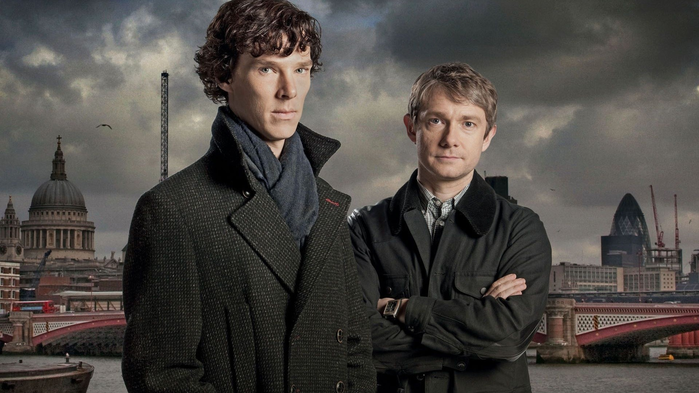
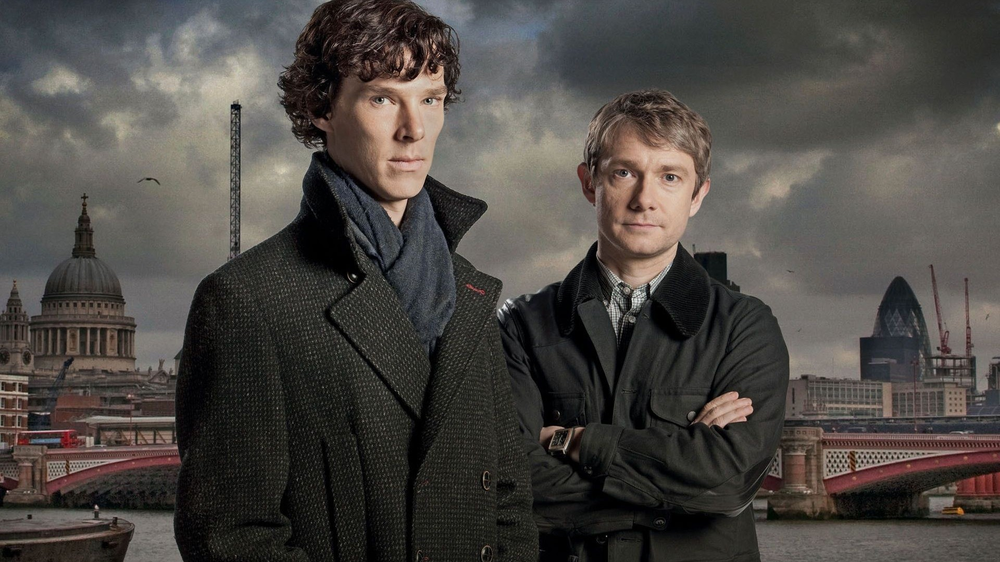

O personagem Sherlock Holmes é um detetive atraído por criminologia, detalhista, com grande capacidade de observação e dedução ao seguir pistas e resolver mistérios abandonados pela polícia como sem solução Sherlock passa os dias estudando crimes do passado e fazendo experiências químicas, abastecendo suas poderosas capacidades mentais